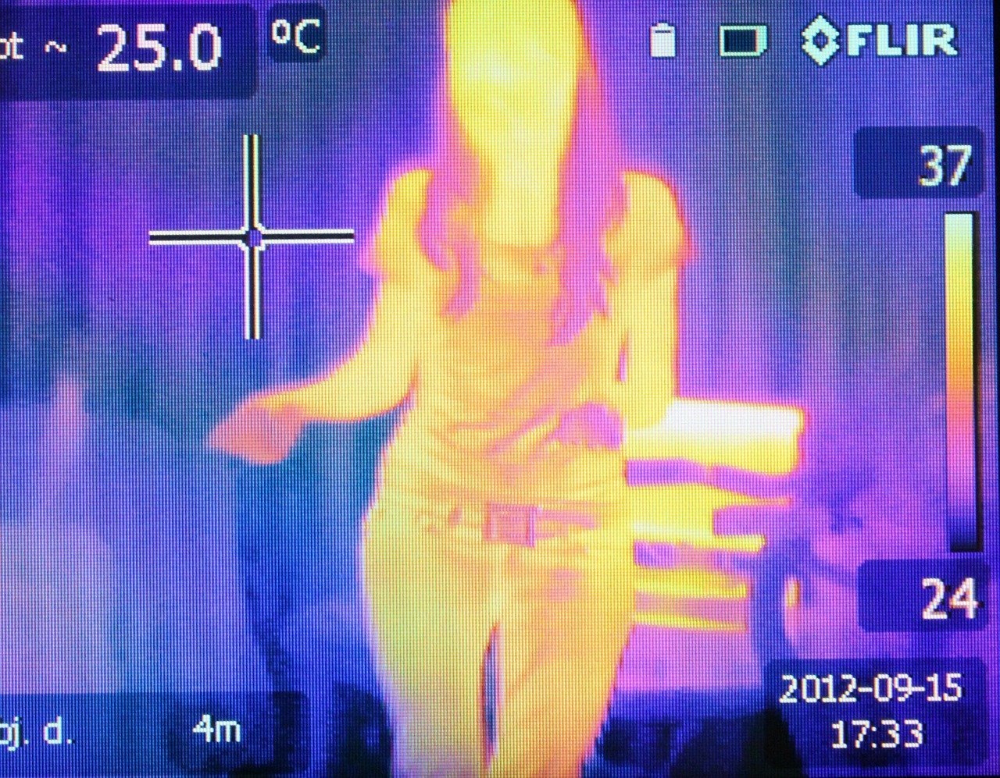

Tecnologia > Inovações
por Dr.Wendller
Atualizado em 09/11/2020
Nova tecnologia permitirá câmeras comuns a ver cores invisíveis

Não enxergamos todas as cores – há cores invisíveis. O olho humano enxerga apenas as cores do espectro visível – acima do vermelho e abaixo do violeta. As câmeras podem enxergar um pouco além, mas ainda nessa faixa. Inclusive, isso é um experimento interessante. Aponte a câmera do seu celular para aquele “led” do controle remoto da TV e clique em algum botão. Você enxergará através da tela do celular.
No entanto, mesmo as câmera não enxergam todas as cores invisíveis, apenas alguns fragmentos de cores próximas à faixa da luz visível. Para enxergar outras formas de luz, utilizamos câmeras especializadas, como as clássicas câmeras infravermelhas, para se enxergar durante a noite. Mas seu celular não consegue fazer isso.
Mas agora uma tecnologia da Universidade de Tel Aviv, em Israel, pretende mudar isso. Os pesquisadores dizem que a nova tecnologia permitirá câmera comuns, não especializadas, a enxergar essas ondas invisíveis, o que possivelmente irá baratear muito essas câmeras especializadas em um futuro não muito distante.

(D-Kuru).
Formada pelos pesquisadores Dr. Michael Mrejen, Yoni Erlich, Dr. Assaf Levanon e Prof. Haim Suchowski do Departamento de Física de Material Condensado da Universidade de Tal Aviv, a equipe publicou o estudo onde descrevem o trabalho no periódico Laser & Photonics Reviews.
As cores invisíveis
Enxergar ondas infravermelhas e ultravioletas pode ser uma necessidade para alguns. Por exemplo, muitos gases invisíveis para nós são visíveis através das ondas infravermelhas. Portanto, desde possibilitar lindas fotografias, até a utilização de câmeras de segurança para detectar vazamentos de gases, ou até mesmo a democratização de equipamentos científicos, são inúmeras as aplicações.
“O olho humano capta fótons em comprimentos de onda entre 400 nanômetros e 700 nanômetros – entre os comprimentos de onda do azul e do vermelho”, explica em um comunicado o Dr. Mrejen. “Mas isso é apenas uma pequena parte do espectro eletromagnético, que também inclui ondas de rádio, microondas, raios X e muito mais”.
O pesquisador explica que “Em cada uma dessas partes do espectro eletromagnético, há uma grande quantidade de informações sobre materiais codificados como ‘cores’ que até agora estavam ocultos da vista”.

As diversas frequências eletromagnéticas. (Créditos da imagem: Wikimedia Commons).
Inúmeras aplicações
Os pesquisadores são alguns exemplos de aplicações para a tecnologia. Na saúde, por exemplo, está o diagnóstico do câncer. É possível detectar as células cancerosas através das ondas infravermelhas. Imagine só a facilidade de um pré-diagnóstico em postos de saúde. Isso ajudaria, portanto, a filtrar os casos mais rapidamente e encaminhar para as especialidades, em um diagnóstico de fatomais completo. Hoje já existe esse processo, mas são necessárias câmeras especializadas – extremamente caras e sofisticadas.
“Nós, humanos, podemos ver entre o vermelho e o azul. Se pudéssemos ver no reino do infravermelho, veríamos que elementos como hidrogênio, carbono e sódio têm uma cor única”, diz o Prof. Suchowski. “Assim, um satélite de monitoramento ambiental poderia ‘ver’ um poluente sendo emitido por uma planta, ou um satélite espião ver onde explosivos ou urânio estão escondidos. Além disso, como todo objeto emite calor no infravermelho, todas essas informações poderiam ser vistas mesmo à noite”.
Na astronomia, por exemplo, há uma grande aplicação para a detecção de assinaturas infravermelhas. Imagine só, se qualquer um pudesse fazer uma espectrografia da lua utilizando uma câmera simples. A espectroscopia detecta as assinaturas luminosas dos materiais. Dessa forma, a milhões, bilhões e trilhões de quilômetros, os cientistas conseguem descobrir o que compõe determinado corpo celeste. No entanto, utilizamos sondas e telescópios que custam milhões de dólares.
Uma das principais missões da tecnologia é baratear a própria tecnologia. Outrora computadores eram caríssimos e gigantes. Hoje, cabe na palma da sua mão, e possivelmente você lê esse texto a partir de seu celular. É difícil imaginar todas as aplicações de uma tecnologia democratizada. Mas podemos chutar que impressionarão.